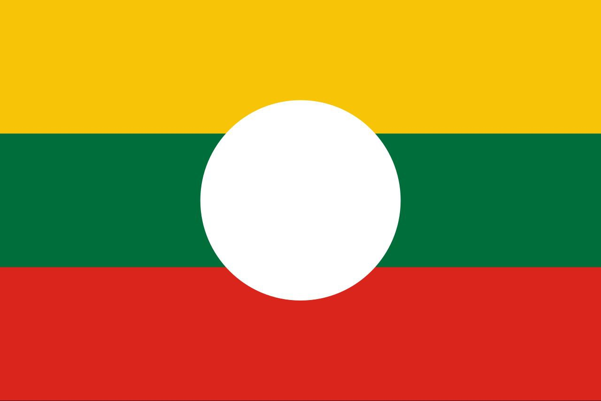
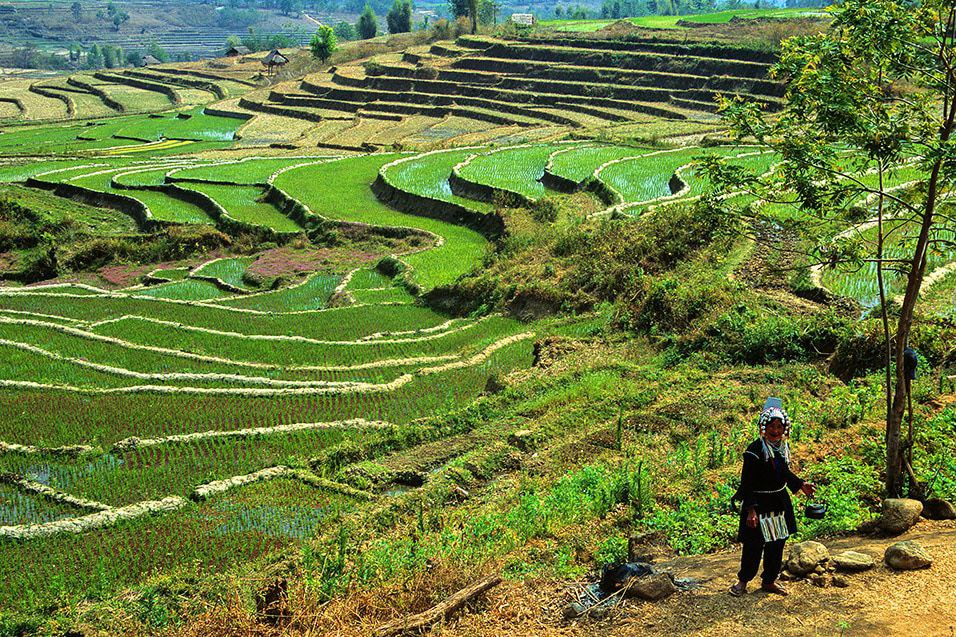
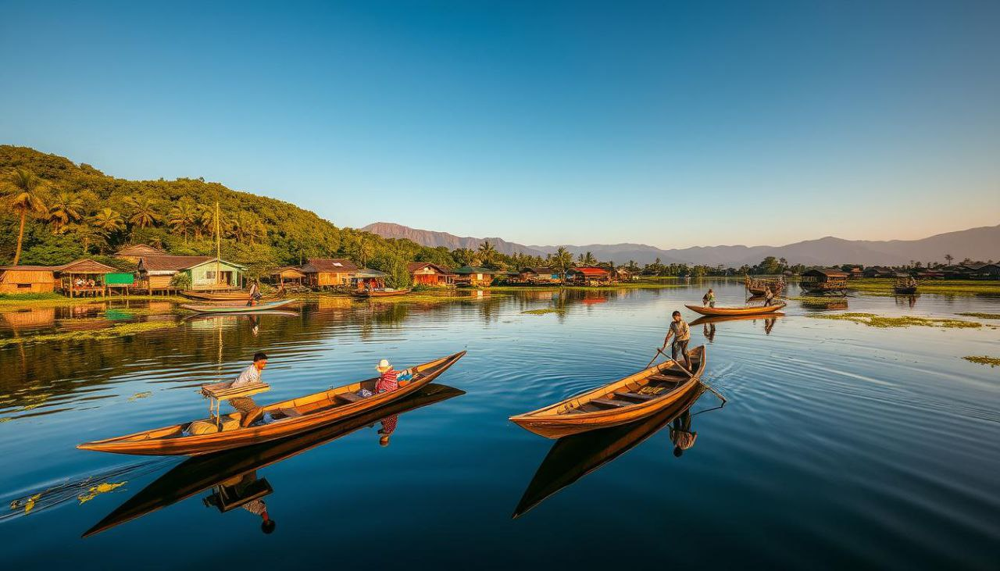
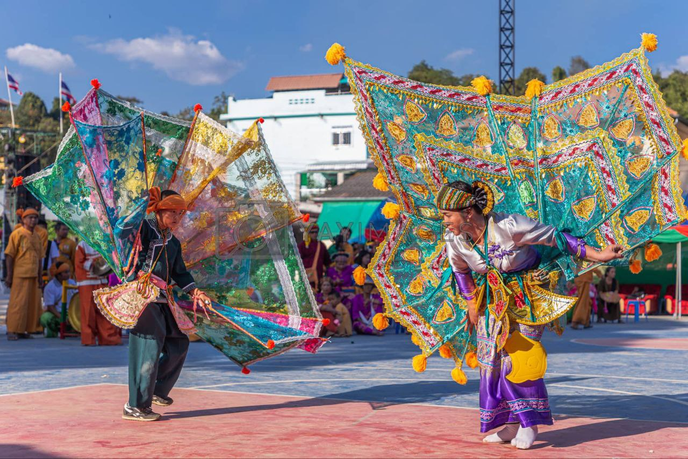
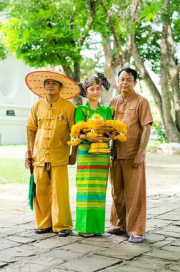
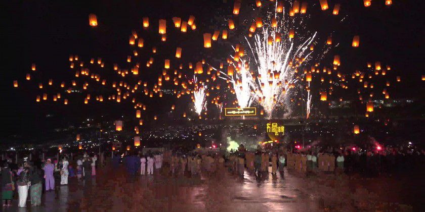

Profile
The Shan people also known as the Tai Long or Tai Yai, are a Tai ethnic group of Southeast Asia. The Shan are the biggest minority of Burma (Myanmar). 'Shan' is a generic term for all Tai-speaking peoples within Myanmar. The majority of Shan are Theravada Buddhists, and Tai folk religion. The Shan constitute one of the four main Buddhist ethnic groups in Burma.

Location
primarily live in the Shan State, but also inhabit parts of Mandalay Region, Kachin State, Kayah State, Sagaing Region and Kayin State, and in adjacent regions of China (Dai people), Laos, Assam and Meghalaya (Ahom people), Cambodia (Kula people), Vietnam and Thailand. The capital of Shan State is Taunggyi, the fifth-largest city in Myanmar with about 390,000 people. Most of the Shan State is a hilly plateau, the Shan Plateau, which together with the higher mountains in the north and south forms the Shan Hills system.

Attraction
Popular tourist attractions in Shan State include Inle Lake, known for its floating villages and unique leg-rowers, and the Pindaya Caves, home to thousands of ancient stupas. Other key sites are the Kakku Pagodas with over 2,400 stupas, the historic Nga Phe Kyaung Monastery, and the scenic town of Kalaw, a popular trekking base. Natural and scenic attractions

Culture and Traditions
Shan traditional culture includes a strong connection to their language, Buddhist faith mixed with spirit worship, and unique agricultural and artistic practices. Their traditional arts feature dances like the sword and sheep dances, unique architecture similar to Thai temples, and a famous cuisine. Socially, they maintain a strong identity with a history of hereditary princes, and a tradition of democracy by consensus.

Traditional Dress
The traditional attire of the Shan people varies across locales. Generally speaking, Shan men wear baggy khaki trousers similar to fisherman pants, and a headwrap. Shan women wear longyis with embroidered designs and textiles associated with their hometowns.

Festival
Taunggyi Hot Air Balloon Festival also known as Taunggyi Tazaungdaing Festival is held on the full moon day of Tazaungmon, which is the eighth month of the traditional Burmese calendar. It is remarked as one of the Burmese traditional festivals, celebrated yearly in Taunggyi, the capital city of Shan State, Myanmar. The festival was first established with Buddhist religious meaning and changed into the traditional handicraft hot air balloon competition nowadays.